Overhead or up at the stargazing stops. IAU plates from the course centroid, astronomical dusk to dawn.
Overhead: Aquila, Cygnus, Lyra, Ophiuchus, Pegasus.
Up: Andromeda, Aquarius, Capricornus, Cassiopeia, Cepheus, Corona Borealis, Draco, Piscis Austrinus, Sagittarius, Scorpius, Serpens.
Andromeda
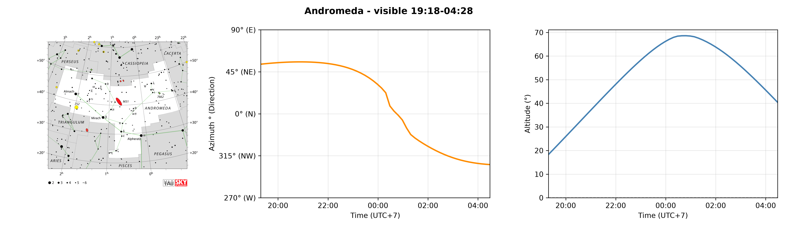
Download chart
At km 157.
Andromeda on Night 1
Aquarius
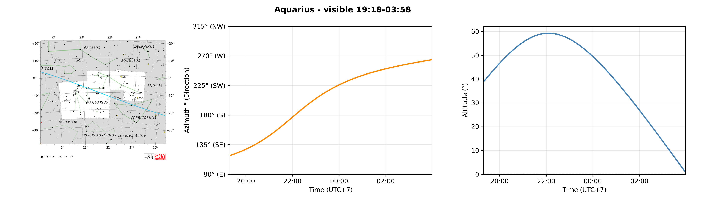
Download chart
At km 152, km 157.
Aquarius on Night 1
Aquila
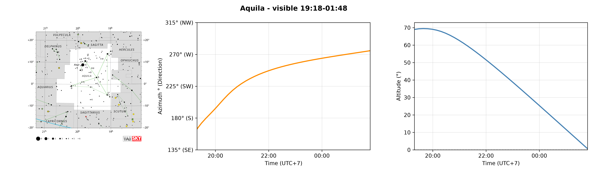
Download chart
At km 152, km 157.
Aquila on Night 1
Capricornus
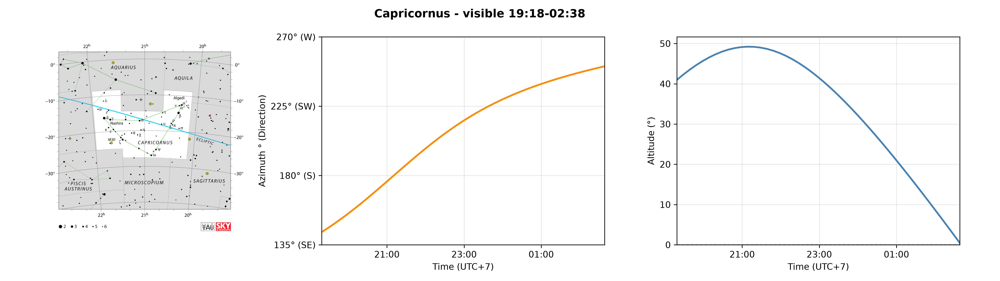
Download chart
At km 152, km 157.
Capricornus on Night 1
Cassiopeia
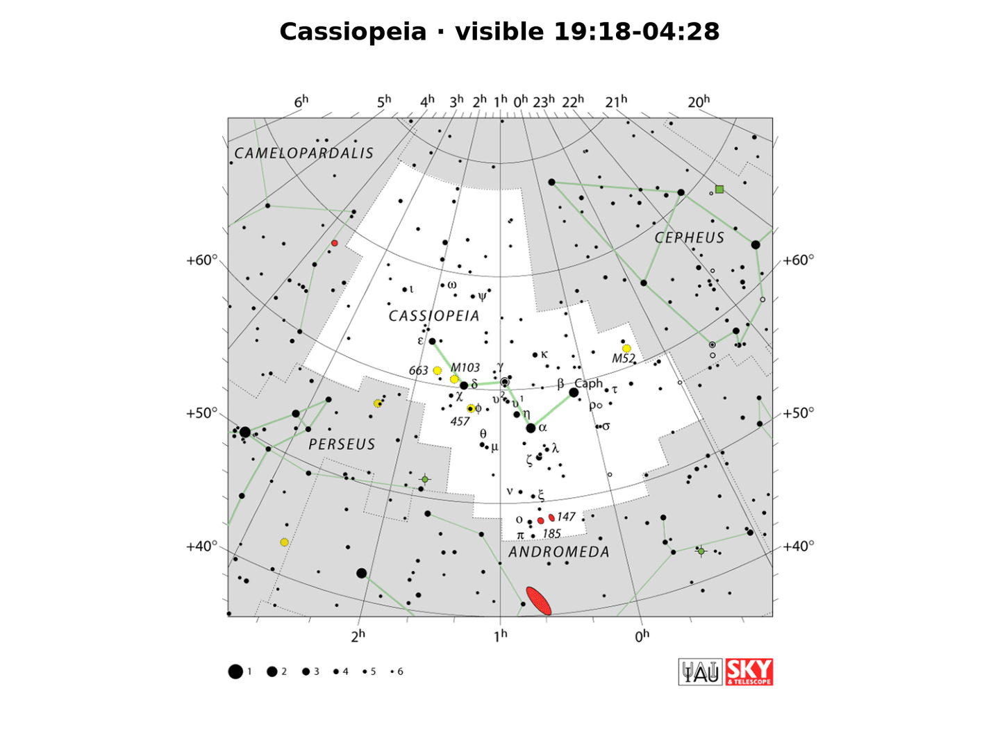
Download chart
At km 152, km 157.
Cassiopeia on Night 1
Cepheus
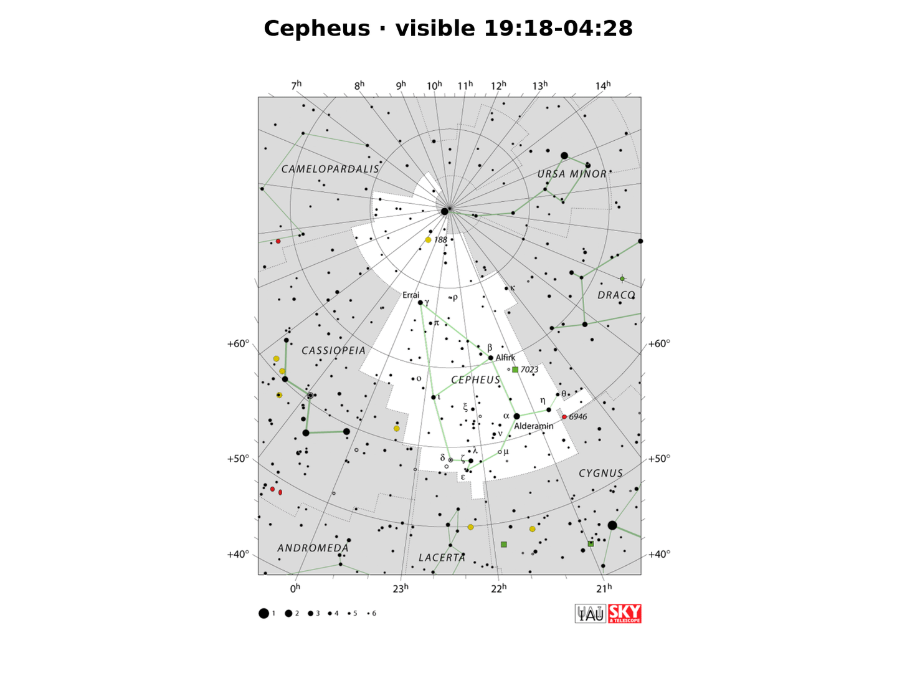
Download chart
At km 152, km 157.
Cepheus on Night 1
Corona Borealis
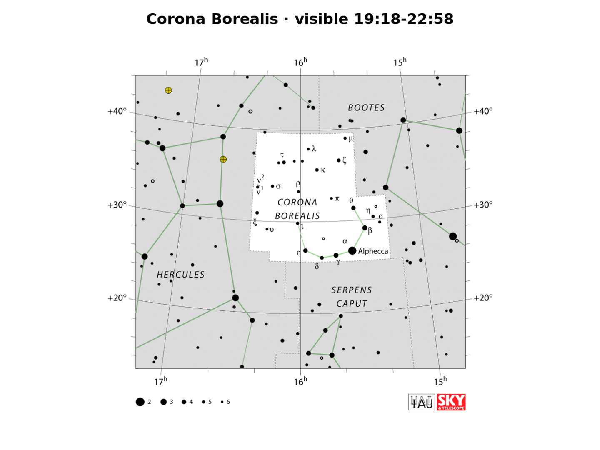
Download chart
At km 152, km 157.
Corona Borealis on Night 1
Cygnus
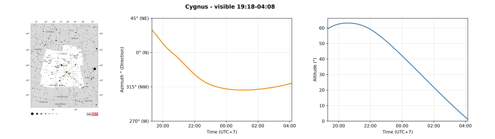
Download chart
At km 152, km 157.
Cygnus on Night 1
Draco
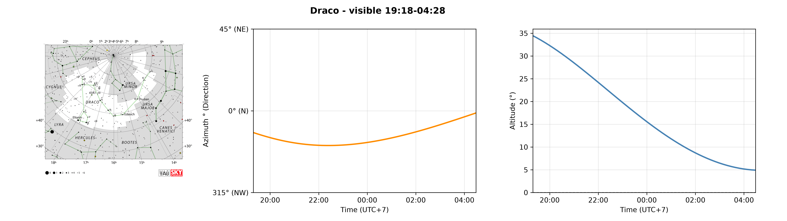
Download chart
At km 152, km 157.
Draco on Night 1
Lyra
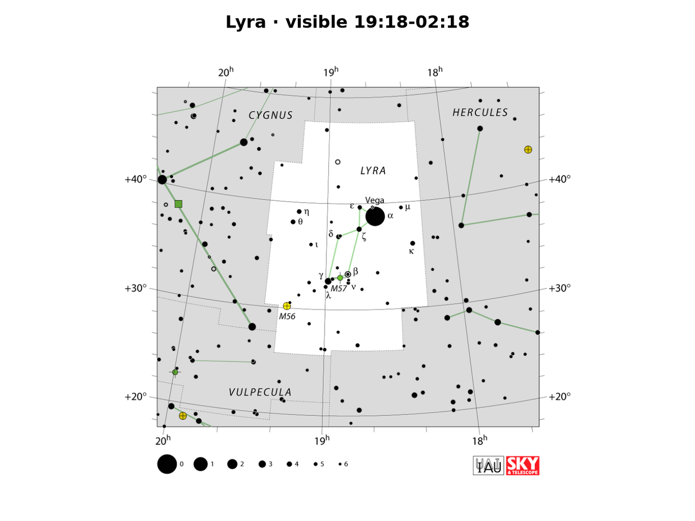
Download chart
At km 152, km 157.
Lyra on Night 1
Ophiuchus
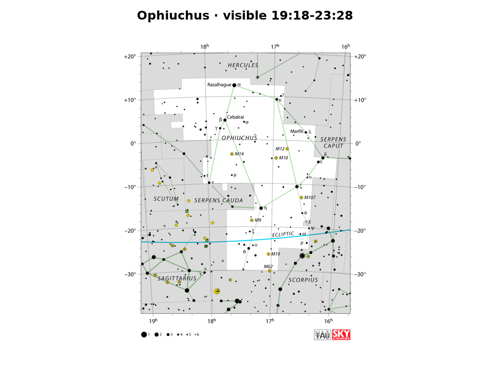
Download chart
At km 152, km 157.
Ophiuchus on Night 1
Pegasus
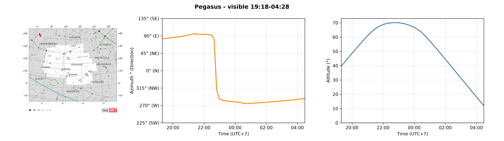
Download chart
At km 152, km 157.
Pegasus on Night 1
Piscis Austrinus
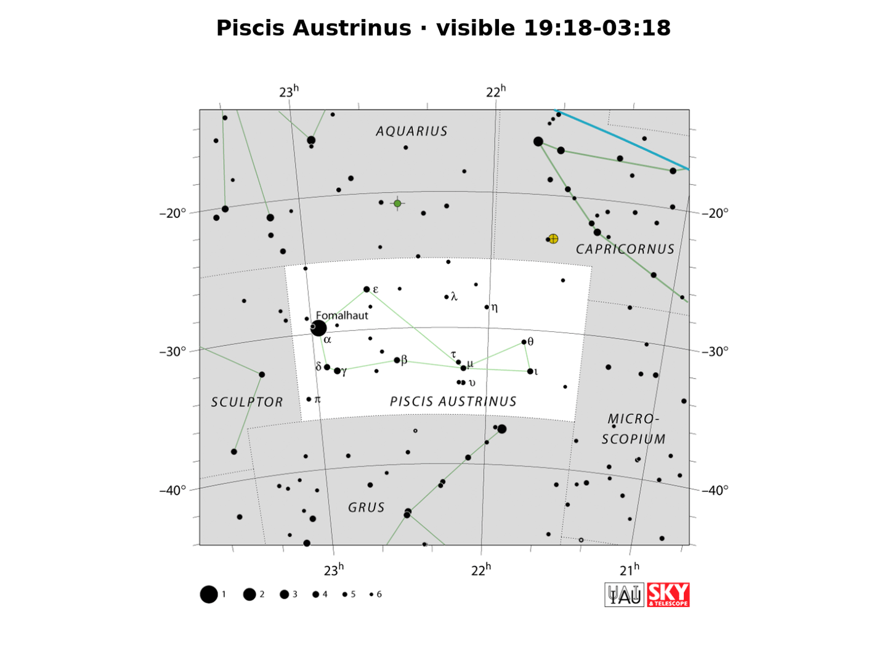
Download chart
At km 157.
Piscis Austrinus on Night 1
Sagittarius
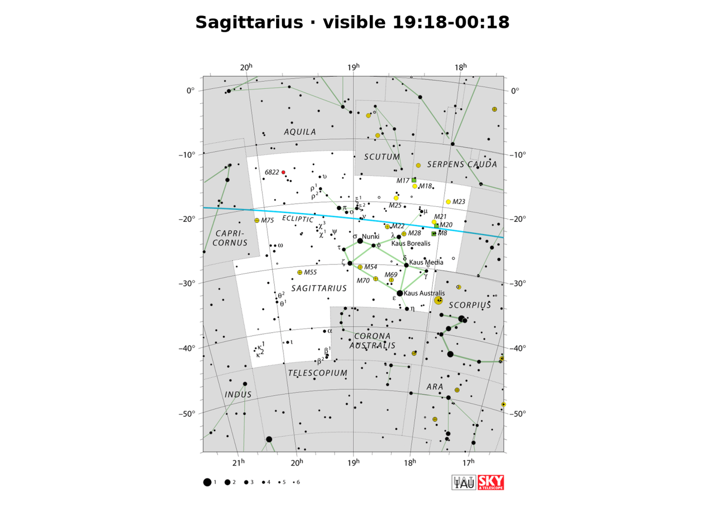
Download chart
At km 152, km 157.
Sagittarius on Night 1
Scorpius
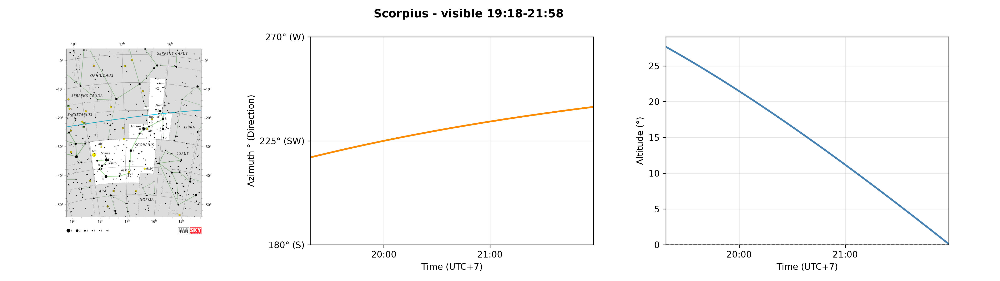
Download chart
At km 152.